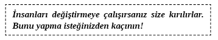
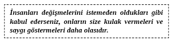
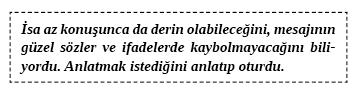
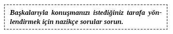
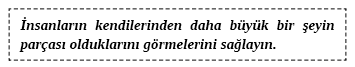
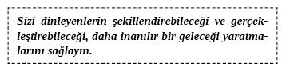
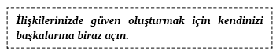

5. BÖLÜM - İLETİŞİM 101: BAŞARI BECERİLERİ
Bırakın kulakları olan duysun.
Nasıralı İsa6
Bu Soruların Cevaplarını Bilmek İstiyor musunuz?
• İnsanların söyleyeceklerinizi dinlemesi için nasıl konuşursunuz?
• İnsanların bakış açınızı göz önünde bulundurmaları için onlara nasıl ilham verirsiniz?
• Şu an fikirlerinizi görmezden gelen hayatınızdaki insanların birdenbire onları yeniden göz önünde bulundurmasını ve dikkat etmesini nasıl sağlarsınız?
• Şirketler ilk olarak iletişim kurabilen ikinci olarak da işlerini öğrenebilecek çalışanlar ararlarsa iş yerindeki değerinizi artırmak için ne yaparsınız?
• İletişim sorunları toplumumuzda boşanmaların en büyük nedeniyse partnerinizle etkin iletişim kuracağınızı nasıl garanti edebilirsiniz?
• Evde, ailenizde, işte ve hatta kürsüde söyleyeceklerinize insanların dikkat etmeleri için yapabileceğiniz basit şeyler nelerdir?
İnsanlarla İletişim Kurma: Temel Bilgiler
İletişim insan davranışları arasında en çok konuşulan ama en az anlaşılan unsurdur. Çeşitli fiziksel şekillerde (sözlü olarak, yazarak, bilgisayarla, dokunarak vb.) iletişim kurma yetimiz evrimle paralel değildir ve eşsiz bir şekilde insana özgüdür. Bir veya iki duyunun kaybı iletişimi zayıflatır fakat bizi durdurmaz. İlginç bir şekilde etkin iletişim, okul öncesi seviyelerde nadiren öğretilir. En çok ihtiyacımız olduğunda yani ilk sınıflarda temel bir beceri olarak neredeyse hiç öğretilmez. Açıkça belirtmek gerekirse kelimeleri ve okunuşlarını öğreniyoruz ama ses tonumuzla bizi dinleyenlere tam ve doğru bir mesaj aktararak kendimizi ifade etmeyi öğrenmiyoruz. Çoğu insan bu becerileri asla öğrenmez. Öğrenenler de okul sonrası hayatta ya da çok az bir şey de olsa üniversitede öğrenir. İnsanlarla etkin bir şekilde içsel düzeyde iletişim kurabilirsek eninde sonunda katmanları bir bir açarak insan ruhunun derinliklerine inebiliriz. Bu bölüm insanların iletişim kurma isteği ve becerilerini tam kapasite kullanmalarına yardımcı edecek temel bilgileri ele alıyor.
İletişim Unsurları
En belli başlı, temel düzeydeki kişiler arası iletişim aşağıdaki unsurları içerir.
1) Aktarıcı. Bir mesajı başkasına aktarmak isteyen kişidir. Mesaj sözlü veya sözsüz aktarılabilir.
2) Alıcı. Başkasından mesaj alan kişidir.
3) Mesaj. O veya bu şekilde mesaj bilgidir.
4) Gürültü. Mesajın asıl amacına müdahale eden herhangi bir şey. Gürültü mesajın bazı kısımlarını silebilir. Bilginin bozulmasına veya genelleşmesine neden olabilir. Mesajın diğer insanın zihninde ve ruhunda aynen oluşumunu engeller. Aktarıcı ve alıcının inançları, tavırları, kişilikleri, hisleri, değerleri, arka plandaki yüksek sesler ya da iletişimi bozan her türlü şeyi içerir.
5) Geri bildirim. Alıcılar ve aktarıcılar sözsüz ve sözlü mesajlara sürekli geri bildirimde bulunurlar. Geri bildirim her zaman bir mesajdır ama tanım olarak özellikle başka bir mesaja cevaptır.
6) Yeniden oluşum. Aktarıcının mesajının alıcının zihninde yeniden oluşması yalnızca temel seviyede iletişim kuranların tamamen başarılı olmasıdır. Kısacası yeniden oluşum iletişimin ideali veya amacıdır. Amaçlanan iletişime mümkün olduğunca yakın bir yeniden oluşum bekleriz.
7) Anlama. Alıcının mesajı anladığı şeklidir.
Muhteşem iletişim, aktarıcıdan alıcıya bir mesajı aktarma ve bu mesajın alıcının zihninde yeniden canlanmasını sağlama becerisidir. Muhteşem iletişim, aktarıcının gönderdiği bir mesajı alma ve mesajın alıcının zihninde canlanmasıdır. Eğer alıcı iletişimin herhangi bir kısmından emin değilse akıllıca sorular sorarak bunu açıklığa kavuşturmak onun sorumluluğudur. Mesajı aktaran kişi de iletişimin sonucundan sorumludur. Bu da mesajı aktaran kişinin onu alıcı tarafından anlaşılır şekilde sunması gerektiği anlamına gelir. Kulağa kolay geliyor ama gerçekten öyle mi? Eğer bir kişi sizinle rahatsız bir iletişim içindeyse bu sonuçları elde etmek mümkün değildir.
Kişilerde İçsel İletişime Giriş: Alıştırmalar
Muhtemelen iletişim kurmanızın kolay olacağını bildiğiniz birkaç kişi vardır. Bunlar aranızda harika bağların, karşılıklı saygının ve birçok paylaşılan değerin bulunduğu arkadaşlarınız veya aile üyeleriniz olabilir. Bu alıştırmalar bu küçük insan grubunda değil, hayatınızda ve işinizde başa çıkılması zor insanlar konusunda size yardım etmek için tasarlanmıştır.
Bu alıştırmaların her biri için size yardım edecek bir partnere ihtiyacınız olacak. Partneriniz de ilişkilerde mükemmeliyet yaratmak ve kendi içsel iletişimini geliştirmekle ilgilenen biri olmalıdır. Bu alıştırmaların hepsi çok zordur ve size en zor iletişim problemleriyle başa çıkmayı öğretecektir. Bu alıştırmalar sadece güç problemlerle başar çıkma becerinizi geliştirmez. Daha sonra okuyacağınız, hayatımızda ‘İyi Niyetli Ejderhalar’ olarak adlandıracağımız kişilerle başa çıkmada size yardım edecekler.
1. ALIŞTIRMA: SESSİZ GÖZLER
Sessiz gözlerin amacı, göz teması kurmanızı ve ilginizin tamamını başka bir insana vermeniz için sizi teşvik etmektir. Gerçek olmanın bir kısmı, birine ilginizin tamamını vermektir. Bu sandığınız kadar kolay değildir.
Sessiz Gözler. Onun kişisel alanını işgal etmeden bir insanın karşısına oturun. (Yaklaşık 45 santimetre aralıkla oturun ve 120 santimetreden uzak olmayın.) İki dakika boyunca ikiniz de sessizce oturmalısınız. İki dakika boyunca partnerinize bakın. Bu süre boyunca gözlerinizi partnerinizin üstünde tutabilirseniz bu alıştırmada başarıya ulaşırsınız. Partnerinizin sizinle göz teması kurması önemli DEĞİLDİR. Önemli olan sizin gözünüzü partnerinizin üzerinden ayırmamanızdır. Bir anlığına bile başka yere bakarsanız tekrar başlamak zorundasınız. Sessiz Gözler alıştırmasını başarıyla tamamlayıp sonrakine geçin.
2. ALIŞTIRMA: KAPANIŞ
Kapanış bize iletişimle ilgili birkaç önemli şeyi öğretmektedir. İletişimde yönetebilmeli ve takip edebilmeliyiz. Başkalarına ilgimizin tamamını vermeli ve kendimizden geçmeliyiz. Yani biri bizden bir şey yapmamızı isterse bunu yapmak dışında başka bir şey düşünmeden onu gerçekleştirebilmeliyiz. Kapanış, bize her iletişim çemberini kapatmanın önemini de öğretmektedir. Birisi bizim için kendinden geçecek kadar kibar davranırsa ona bizimle olduğu için içtenlikle teşekkür edebilmeliyiz. Kapanış bize bütün bunları ve daha fazlasını öğretmektedir. Yapması oldukça kolay gibi görünüyor ama düzgün yapıldığında çok güçlüdür
Kapanış. Partnerinizin karşısına Sessiz Gözler’de oturduğunuz uzaklıkta oturun. Ondan yirmi nesne veya yere ulaşana kadar odadaki şeylere bakmasını isteyeceksiniz. Partneriniz bu nesnelerin her birine baktıktan sonra “Teşekkür ederim” diyeceksiniz. Partneriniz yirmi nesneye baktıktan sonra size bu alıştırmayı başarıyla tamamladığınızı söyleyecek.
3. ALIŞTIRMA: YÖN DEĞİŞTİRMEYE TEŞVİK
Bu alıştırma düşmanca insanlarla iletişim kurmamızı sağlar. Aşağılayıcı davranan, zarar vermek amacıyla iletişim kuranlarla... Böyle bir iletişimde taraf olmak bir hayli zordur. Alıştırma, başkalarının içindeki en kötüye hazırlanmanıza yardım eder. Çoğu insan bilerek veya bilmeyerek size kötü şeyler söyler ve çoğumuz bu tarz düşmanlığı kaldırmaya hazır değiliz. Yön Değiştirmeye Teşvik, sizi başka insanların olumsuz davranışlarına karşı aşılar.
Yön Değiştirmeye Teşvik. Partnerinize bir önceki alıştırmaya benzer uzaklıkta oturun. Ancak bu alıştırma için farklı bir ortam yaratmak adına sandalyenizi biraz sağa veya sola kaydırın. Bu alıştırmada, partnerinizin iki dakika boyunca size düşmanca davranmasına izin vereceksiniz. Zor da olsa amacı, size tam iki dakika boyunca kaba davranmak. Sözleri veya hareketleriyle sizi kırmaya çalışabilir. Sizinle ağız dalaşına girmek için iki dakikası var. İstediği her şeyi söyleyebilir. Amacı ona karşılık vermenizi, hemfikir olmanızı veya ona karşı çıkmanızı sağlamak. Bir kavgayı tetiklemeye çalışacak. İki dakika boyunca sessiz kalıp bu zaman zarfında göz temasını korursanız bu alıştırmada başarılı olursunuz. Gülerseniz veya konuşursanız tekrar başlamalısınız.
İki dakikanın sonunda partnerinize teşekkür edin. Bunun SİZİN alıştırmanız olduğunu ve ona alınmadığınızı veya onu kırmayı amaçlamadığınızı bilmesini sağlayın. Olası negatif hisleri ortadan kaldırmak için partnerinize sarılın. Başkalarının kabalıklarından duygusal olarak daha az etkilenmek için bu alıştırmada yardım etmesini siz istediniz.
4. ALIŞTIRMA: SORUMA CEVAP VER
Alıştırmanın amacı, göz ardı edildikten veya partneriniz konuyu değiştirdikten sonra aynı soruyu tekrar sorma becerinize nasıl odaklanacağınızı size öğretmek. Sıklıkla ilişkinin ilerlemesi için çeşitli güçlüklerle ilgilenmek zorundayızdır. Çoğu zaman insanlar -özellikle erkekler- soruya cevap vermeden ve sorunu çözmeden konuyu değiştirmeye çalışacaktır. Bu alıştırma sizin hedefe kitlenme becerisi kazanmanıza yardım edecek.
Soruma Cevap Ver. Sandalyenizi daha önce olduğundan farklı ama partnerinizle yüz yüze duracağınız şekilde yerleştirin. Şimdi, “Köpekler miyavlar mı?”dan başlamak üzere dört belirli soru soracaksınız. Partneriniz istediği şekilde cevap verebilir. “Hayır” derse “Teşekkür Ederim” diyebilirsiniz. Ancak partneriniz “Hayır” demek yerine en azından bir süreliğine cevap vermemeyi tercih etmeli sonra da konuyu değiştirip soruyu tekrarlamalıdır. Partneriniz siz ona beşinci kez “Köpekler miyavlar mı?” diye sormadan önce size “Hayır” cevabını vermelidir.
Her yanlış cevaptan veya cevap alamadıktan sonra, “Köpekler miyavlar mı?” derseniz başarılı olursunuz. Son üç soru aşağıdaki şekildedir.
“Tüm postacılar kadın mı?”
“Kuşlar köpekbalıklarını yer mi?”
“Suyun üzerinde yürüyebilir misiniz?”
Bu soruların hepsinin doğru cevabı “Hayır” ve bu cevabı eninde sonunda veya beşinci kez sormadan önce almalısınız. Zaman kısıtlaması yok ama soru başına iki dakikadan fazla zaman ayırmamalısınız. Ancak cevap alamadığınızda sorunuzu tekrarlarsanız başarıya ulaşırsınız.
Bu alıştırmayı tamamlayınca sandalyenizin yerini değiştirin ve partnerinizin tam karşısına oturun. Bir sonraki alıştırma Doğru ve İçten Hisler. Amacı, partnerinizin iletişim becerilerini geliştirmek amacıyla tasarlanmış çok zor iletişim alıştırmalarını yaptıktan sonra onun değerini güçlendirmektir.
5. ALIŞTIRMA: DOĞRU VE İÇTEN HİSLER
Doğru ve İçten Hisler. Bu son alıştırma en az otuz saniye ve en çok iki dakika sürmelidir. Partneriniz şimdi sizinle ilgili doğru ve içten hislerini söylemelidir. Sizinle ilgili sevdiği özellikleri söylemeli ve bunlar doğru olmalıdır. Partneriniz bunu yaptıktan sonra siz de aynısını yapmalısınız.
Bu alıştırmalar size zor durumda iletişim kurmayı öğretir. Bu zor alıştırmalarda ustalaştıktan sonra hemen hemen herkesle her konuda iletişim kurmaya hazır hale geleceksiniz.
Bilinçli İletişim: Bilerek Konuştuğunuz An
Kişiler arası iletişime etkin şekilde katıldığınızda temel unsur Sonuç Bazlı Düşünme veya Bilinçli İletişim’dir. Sonuç Bazlı Düşünme (SBD), başkalarıyla önemli bir konuşmadan önce hedefinizi bilmeyi içerir. Her zaman zihinde bir sonucun belirmesi gerekmez ama çoğunlukla geminizin hangi yöne gittiğini bilmek çok önemlidir. Bazen sadece biriyle birlikte ‘olmak’ güzeldir. Bazen de başkalarıyla gelişmek, paylaşmak ve bir şeyler oluşturmak güzeldir. Son olarak da başkalarıyla etik bir şekilde rekabet etmeyi ve işbirliği yapmayı öğrenmeliyiz. Bilinçli iletişim işte size bunu nasıl yapacağınızı öğretir.
SBD’yi ilişkilerdeki sorunlarınızı çözerken veya yeni evinizin fiyatında pazarlık yaparken kullanabilirsiniz. SBD, üzerinde uzmanlaşması zor bir beceridir. Yine de bir şey isteğinizde veya başka bir kişinin işbirliğine ihtiyaç duyduğunuzda SBD’yi kullanacağınız için oldukça çok pratik imkânı bulacaksınız. İşteyken bütün gün boyunca SBD’yi kullanabilirsiniz.
Peki bu başarı sırrı nedir? Etkin düşünmek ve konuşmak için SBD’yi nasıl kullanırsınız? Nereye gideceğinizi bilmenizi sağlayacak bir yol haritası edinmek ilk adımdır. Bu kitabın önceki sayfalarında belirtildiği üzere nerede olduğunuzu ve nereye gittiğinizi bildiğinizde oraya gitmesi nispeten kolaylaşır. SBD’nin ilk prensibi:
İletişim kurduğunuzda ne istediğinizi bilin.
Ne demek istediğinizi bilmezseniz etkin iletişim kurmak zordur. Çok seviyeli (fiziksel, duygusal, zihinsel, manevi) bir hayat sürmede başkalarının kaprislerinin bir etkisi olmaktan çok kendi hayatınızda bir nedensinizdir. Daha fazla kontrolünüz vardır ve daha mutlusunuzdur. Hayatınızı bir görev ve amaçla güçlendirirsiniz.
SBD büyükten başlayıp küçüğe doğru ilerler. Gerçek içsel benliğinizle ‘en çok’ siz olan tarafınızla ilgili daha çok şey öğrendikçe hayattaki amacınıza ve hayatın anlamına dair daha önce hiç yaşamadığınız bir his kazanırsınız. Gün içinde yaşadığınız küçük şeylerde kendiniz ve etrafınızdakilerin en çok yararına olanı yapmak için SBD’yi kullanırsınız.
SBD sürecinin tamamı aşağıda detaylıca verilmiştir. Örnek olarak gelecekte karşınızdakiyle birebir etkin iletişim kurmayı umduğunuz bir randevunuzu veya toplantınızı düşünün. Aklınıza somut bir tane geldiğinde o duruma aşağıdaki SBD modelini uygulayın.
Sonuç Bazlı Düşünme - Net İletişim Modeli
1) Bu iletişim ve etkileşim sürecinden kesin olarak ne istiyorum?
2) Diğer insan ne istiyor? Bunu bilmiyorsam ne istemeleri muhtemeldir?
3) Etkileşim sürecinde en az kabul edebileceğim şey nedir?
4) Etkileşim sürecinde hangi problemler ortaya çıkabilir?
5) Bu problemlerin her biriyle nasıl başa çıkacak ve eğer mümkünse bu problemi diğer kişi için FAYDA olarak nasıl kullanacağım?
6) Süreci bir sonuca nasıl bağlayacağım?
Bu iletişim modelini yeni bir ev alırken pazarlık yapmak için kullanabilirsiniz. Bu modeli iş arkadaşlarınızla, arkadaşlarınızla ve sevdiklerinizle konuşurken günlük hayatınızda uygulamanız oldukça basittir.
Kişiler arası düzeydeki iletişimde mükemmeliyete ulaştıktan sonra diğerlerinin hayatta nelere değer verdiği ve iletişim stillerini keşfedersiniz. Bir sonraki kısımda, insanların iletişim kurmayı eğlenceli ve ödüllendirici hale getiren davranışları, iletişimlerindeki farklılıkları ve tuhaflıkları hakkında daha fazla şey öğreneceksiniz.
Konuştuğunuz İnsanları Anlayın: Bu Düşünceleri Hiç Düşündünüz mü?
Konuştuğunuz insanların dalga boyunda değilseniz sizi dinlemeyeceklerdir. Onlarla ilgili bazı basit ama önemli şeyleri anlamazsanız ne kadar konuşursanız konuşun söylediklerinizle ilgilenmeyeceklerdir.
Bu insanlar mantıksızdır. Oldukça can sıkıcı bir durumdur. Onların nasıl düşündüklerini ve söyledikleri şeyleri neden söylediklerini anlayabilmek için her şeyinizi verirsiniz. Neden beni dinlemiyorlar ki? Erkekler bunu, söz konusu kadınlar olduğunda, kadınlar da erkekler söz konusu olduğunda düşünürler. Aslında hepimiz, patronumuz ve çalışanlarımızla ilgili böyle hissederiz. Anne babanız ve çocuklarınız için de bunları aklınızdan geçirirsiniz.
Diğer insanların nasıl düşündüklerini anladığımızda insanların bizi dinlemeleri için konuşabiliriz. İnsanların nasıl düşündüğünü anlayana ve onlar için neyin önemli olduğunu öğrenene kadar onlarla iletişim kuramayız değil mi?
Her kadın genlerinin, hayat deneyimlerinin, inançlarının, değerlerinin ve kişiliğinin eşsiz bir bileşimidir. Genel konuşmak gerekirse kadınlar erkeklerden daha farklı şekilde düşünürler. Kadınların erkeklere kıyasla iletişimle, ilişkilerle ilgili bazı farklı değerleri ve inançları vardır. Bazen sinir bozucu hayatın bu gerçeğine ek olarak, hepimizin her gün oynadığı roller vardır. Bunları oynarken diğer rollerimizden büyük oranda farklılık gösteren belli değerler, inançlar ve kişilik özelliklerimiz vardır. Örneğin âşık bir kadın, anne veya yönetici rollerine kıyasla farklı değerlere, inançlara ve davranışsal eğilimlere sahiptir.
Neyse ki hepimiz birbirimizden farklıyız. Hayat yolculuğunuzun bir kısmı sizin, etrafınızdakilerin kimliğine dair sürekli arayış ve keşiftir. Birini rahatlıkla tamamen anlayabilme yeteneğine sahip olsaydınız bir evlilikte veya herhangi bir tür ilişkide paylaşılacak çok az şey kalırdı. Kısacası birini tamamen anladığınızda o kişiyle hayat inanılmaz derecede sıkıcı hale gelecektir.
Hayat yolculuğunuzun başka önemli kısmı da kim olduğunuzu ve diğer insanlar hakkında ne düşündüğünüzü sürekli paylaşmaktır. Siz insanların sizi sadece dinlemesini istemiyorsunuz; aynı zamanda duygusal açıdan sağlıklı kalabilmeniz için insanlara kendinizi dinletmeniz gerekiyor. Düşüncelerinizi ve hissettiklerinizi başkalarıyla paylaşmak çok önemlidir. Düşüncelerinizi ve hislerinizi başkalarıyla paylaşma yeteneğiniz olmasaydı çok üzülürdünüz. Başkalarının sizi dinleyeceğini gördüğünüzde, kendinize ve hayatınıza dair gittikçe artan bir iyimserlik ve mutluluk hissine kapılmaya başlarsınız.
Başka insanları anlamak birçok düzeyde mümkündür. Erkekler ve kadınların düşünce tarzındaki farklılıkları anlayabiliyoruz. Temel kişilik türlerin, onların nasıl düşündüklerini ve iletişim kurduklarını anlayabiliyoruz. Kısa sürede neredeyse herkesin davranışsal eğilimlerinin temelini anlayabiliyoruz. Yine de bizi birbirimizden bu derece farklı kılan ince detayları aramaya çok fazla zaman harcayabiliyoruz. Kitabı okumayı bitirdiğinizde başka insanları anlama konusunda birçok sezgi edinmiş olacaksınız. Çok yakında aklınıza gelenden çok daha fazla dinleyici kazanacaksınız çünkü konuştuğunuzda kendinizi dinletmenin sırlarını açığa çıkaracaksınız. İnsanların huzurlu hissetmelerini ve size açılmalarını sağlamanın anahtarlarını elde edeceksiniz. Bu arada konuştuğunuzda insanların sizi dinlemesini sağlamak, başarılı ve uzun süreli ilişkiler kurmanın da anahtarıdır.
Başkalarını Anlamaya Başlamak
Güçlü iletişimin unsurları hakkında bilgi edinmek, dürüst iletişim için gerekli açık ve güvenli ortamı yaratmakla eş değerdir. Bu beceriyi bölümü okudukça kolaylıkla edineceksiniz.
Bir şeyin başka bir şeye benzediğini veya farklılıklarını belirleyerek hayatta birçok şey öğreniyoruz. Belli bir uzaklıktan bakınca un şeker gibi görünür ama yakına gelindiğinde ikisinin çok farklı olduğu anlaşılır. Koklayarak, tadarak, dokunarak, duyarak, görerek ve yaşadığımız her şey hakkında düşünerek öğreniriz. Altıncı hislerimizi kullanırız. Yaşadığımız şeylerle ilgili genellemeler yaparak öğreniriz. Bir şeyler arasındaki farkı anlayarak öğreniriz. Başkalarıyla iletişimde kişiliğin nasıl bir rol oynadığını öğrenmeye başlamadan önce kendinizle ilgili şu sorulara cevap verin:
Konuştuğunuzda, dinleyicinizle aynı kanalda mı konuşuyorsunuz?
İnsanlar sizi farklı rollerde nasıl algılıyorlar?
Onların sizi öyle algılamasını mı istiyorsunuz?
İnsanlar sizinle ilgili bir şey düşünüyor ama siz sürekli üzerinize yapıştırılan bu etiketten kurtulmaya mı çalışıyorsunuz?
Dünyada her biri eşsiz altı milyar insan var. Bir futbol stadyumunun havadan çekilen fotoğrafı, yüz bin kişinin bir etkinliği izlediğini gösteriyor. Uzaktan oldukça benzer görünüyorlar. Ancak yaklaştıkça farklılıklarını belirleyebiliyorsunuz. Etraftaki insanlara bakmaya belli bir uzaklıktan başlanır ve birbirlerine nasıl benzedikleri görülür. Başkalarında keşfettiğiniz benzerlikler size onların nasıl düşündükleri ve onlarla nasıl konuşabileceğinize dair çabucak temel bir anlayış kazandırır. Farklılıkları keşfettikçe neredeyse her durumda, her insanla iletişim kurma yeteneği edineceksiniz. En iyi yanı da bunu yaparken rahat hissetmenizdir.
Konuşmayı Bitirme: Güle Güle Demenin Gücü
Bir konuşmayı kibar ve etkin bir şekilde bitirmek, daha fazla insanın ustalaşması gereken bir yetenektir. Bitirme, başka insanı kabullenme, ona “Teşekkür Ederim” deme ya da söylenenin anlaşıldığını doğrulama yetisidir. Şüphesiz ki ‘bitmeyen’ bir konuşmanın her iki tarafında da yer almışsınızdır. Önemsediğiniz bir insan odadan çıkmış, telefonu kapatmış ya da nedenini açıklamadan konuşmanın ortasında konuyu değiştirmiş olabilir.
Bu tür konuşmalar tamamlanmadığında insanda huzursuzluk ve sinir yaratır. Karşınızdakinin size dediğini duyup anladığınızı kabullenerek konuşmayı bitirdiğinizden emin olabilirsiniz. Hazır değilseniz biriyle hemfikir olmanız gerekmez. Her konuşmayı sonlandırmak gerekmez.
Birinin güle güle demeden telefonu kapattığını düşünün.
Nasıl hissediyorsunuz?
Birine hediye verdiğinizde ve takdir, minnet göstermediğini hatta basit bir teşekkür dileğini esirgediğini düşünün.
Nasıl hissediyorsunuz?
İletişimi bitirmenin sizin için neden önemli olduğunu düşünüyorsunuz?
Herhangi bir tür kabullenme ile konuşmalarınızın tamamını sonlandırdığınızdan emin olmanızı sağlayabilecek belli başlı şeyler nelerdir?
İletişim kuran biri olarak beceri edinmek uzun süreli ilişkiler geliştirmenize yardım eder. Bu ayrıca hayatınızın amacını ve görevinizi yerine getirmenizi sağlar. Bu bölümde öğrendiğiniz bilgileri kullanın. Göze çarpan ve gerçek bir iletişimci olmak istiyorsanız bir adım daha ileri gidin.
Kendileri için Değişmenizi İsteyen İnsanlarla Olmaktan Zevk Alıyor musunuz?
Yakınlarda, dini ve siyasi görüşlerinin aynı olduğunu düşündüğü biriyle tanışıp onunla evlenmek isteyen bir hasta kabul ettim. İlk seansımızı Minnesota eyaleti sınırları içinde, onun özel mezhebine yönelik sadece iki kilise bulunduğunu ve iki kilisede kendinden kırk yaş büyük kadınlar dâhil yalnızca yedi tane bekar kadın kaldığını keşfetmeye ayırdık. Ona başka kadınlarla görüşmeyi düşünmesini önerdim. Onların farklılıklarını kabul edip saygı göstermeyi öğrenerek bu farklılıklar sayesinde kendisiyle ilgili daha çok şey öğrenebileceğini ifade ettim.
“İnançları benimkinden farklı olan biriyle evlenseydim kendilerininkini değiştirip benim inancımı benimsemeleri gerekirdi” diye cevap verdi.
Bu duymayı beklediğim şey değildi.
“Senin yaptığın her şeye değil de bazı şeylere inansaydı ne olurdu?” diye sordum.
“O zaman değişmek ve benim gibi inanmak zorunda kalırdı. Yoksa onunla olamazdım.”
Kendi inançlarının kopyası olmayan birini hayatına almayı reddettiğinde seanslarımıza son vermeye karar verdim. Birinin sizin için değişmesini istemek hepimizin bildiği üzere kesinlikle başarısızlığın reçetesidir. Sizin de deneyimleriniz benimkilerle bu noktada örtüşüyor değil mi?

Hepimiz değişebilir ve kendimizi geliştirebiliriz. Değişim bizim için sağlıklı ve iyidir. Faydalı olmayan şey başkalarının bizim için değişmelerini istemektir. İnsanlar kabul edilmeye ve kendi istekleriyle değişmelerine izin verilmesine ihtiyaç duyarlar. Çoğu insan, kendi kafalarında imaja uyacak şekilde değişmesini isteyenlere şiddetle karşı koyma eğilimi gösterirler. Bizi değiştirmek isteyenlere tolerans gösterebiliriz fakat onları dinlemeyiz. Söyleyecekleri gerçekten umrumuzda değildir. Kendi içinizde değişiklikler yapmak normaldir ama nadir durumlar haricinde başka yetişkinlerin davranışlarını, tavırlarını ve alışkanlıklarını değiştirmeye çalışmayın.
Birçok ebeveyn kendi çocuklarını ‘önemser’ ama çocuklar kabul edildiklerini her zaman (yetişkin de küçük bebek de olsalar) açıkça göremezler. İnsanlar sizin onları kabul ettiğinizi gördüklerinde onları önemsediğinizi algılamaları daha muhtemeldir.

Kabullenmenin Başlıca Unsuru
Sıradan insanları, kişiliklerini değiştirmelerini istemeden önemseyen ve kabul eden liderlerden biri Nasıralı İsa’ydı. Döneminin liderleri değil, halk onu cezbediyordu. Günahkârları, kadınları, çocukları kabul etti. Onunla vakit geçirmeleri ve onun konuşmalarını dinlemeleri için bu üç gruba açık davetiye verdi. İnsanlar onu dinlediler çünkü İsa onları kabul etti. Kendisine kulak vermelerini istedi ve onlar da Nasıralı’ya saygılarını sundu.
Yüzyıllar boyunca İsrailli elçiler, uyarı mesajları ile sözlerini İsrail ve Yahuda krallarına getirirlerdi. Mesajın en önemli noktasına geldiklerinde bu elçiler şu cümleyle beyan etmek üzere oldukları şeyin altını çizerlerdi: Bırakın kulakları olan duysun... Yıllar sonra -İsrail eski bir ulus olduktan sonra- İsa da vaazlarında eski İsrailli elçilerin sözlerini kendi zamanına aksettirmiştir. İsa insanlara kendini dinletecek şekilde konuşmayı biliyordu.
İsa sadece derin şeyler söyleyebildiği için mükemmel iletişimci değildi. O mükemmel bir iletişimciydi çünkü az ve öz konuşuyordu. Düşünebiliyor musunuz, elimizdeki yazılı kayıtlara göre on beş dakikadan uzun bir konuşması yok.

İsa soruları sanatsal bir şekilde kullanmada ustaydı. Sorulara (özellikle onu aşağılayanlardan gelen sorulara) nadiren doğrudan cevap verirdi. Bunun yerine soru soranın zihninde düşünme sürecini başlatırdı. Daha da önemlisi, her konuşmayı kontrol etmek için kendi sorularından biriyle cevap verirdi. İsa, soru soran kişinin her türlü konuşmayı istediği yöne çekme gücü ve kontrolü olduğunu biliyordu.

İsa aynı zamanda usta bir hikâye anlatıcısıydı. Fikirlerini dinleyicilerine uygun olarak kolay anlaşılan metaforlarla veya karmaşık bilmeceler aracılığıyla paylaşırdı. Hikâyeleri hep kısa ve neredeyse her zaman tartışmalıydı. Patavatsız mizacı, söylediği her şeyin hafızalara kazınmasını sağlıyordu.
Konuşarak Zirveye Çıkan Mükemmel İletişimcileri Örnek Alın
Dünyadaki mükemmel iletişimciler, liderlik becerilerinin çok iyi iletişim kurma yeteneklerinin uzantısı olduğunu fark etmişlerdir. Bu harika iletişimcilerin çoğunun zirveye çıkmak için engelleri nasıl aştıklarına dair anlatacak hikâyeleri vardır.
Her birimiz hayatta bir sürü zorluk atlatmış ve etrafımızdaki insanlara karşı direnç kazanmışızdır. Bu kazanım birçok açıdan hem iyi hem kötüdür. Direncin iyi yanı bazı durumlarda aşı gibi görev yapmasıdır. Bazı insanların kabalığını ve dediklerinin insani değerimizle ilgili bir bağlayıcılık teşkil etmediğini eninde sonunda anlarız. Ne yazık ki aynı direnç iletişimi zorlaştırabilir.
Birçok insanla fikirlerinizi ve düşündüklerinizi paylaşmak için yanıp tutuşmuş ama onlar sizi geri çevirmiş olabilir. Bir düzeyde siz onlara doğru çekilirsiniz ve onlar da size doğru. Başka bir düzeyde ise niyetiniz ne olursa olsun sizi dinlemezler.
Bazı kişilere karşı ‘açık ve dürüst’ olabileceğinizi zaten biliyorsunuz. “Açık açık konuşalım.” Ancak bu ‘dürüstlük’ bazı ‘hassas’ insanlar için kırıcı ve kaba görünebilir. Ez cümle karşılaştığınız insanlarla iletişiminizin doğrudan mı dolaylı mı olması gerektiğine sizin karar vermeniz gerekecek. Çoğu kişi kontrol edildiğini anlayacaktır. Ancak başkasının çıkarına yönelik hareket ettiğinizde mesajınız eninde sonunda istediğiniz yere ulaşacaktır.
Önceden edindiğiniz becerileri kullanarak belli stratejiler geliştirebileceksiniz. Aynı zamanda birinin size ilgi göstermesini, hislerinizi ve düşüncelerinizi göz önünde bulundurmasını sağlayacak iletişim tekniklerini uygulayabileceksiniz. Yakında hislerinizi, fikirlerinizi, düşündüklerinizi ve önerilerinizi etrafınızdakilerle iletişim kurarak ifade edebileceksiniz ve bağ kurduğunuz insanların saygısını kazanacaksınız. Soğanın ortasına ulaşıp katmanlarını açmak için nasıl etkin iletişim kurulacağını anlamamız gerekir. Etkin bir iletişime sahip olsaydınız açılacak katman da olmazdı.
Mükemmel İletişimciler
Hayatta mükemmeliyete ulaşmak için iletişim becerilerini kullanmakla ilgili bir kitapta dünyanın gelmiş geçmiş en mükemmel iletişimcilerini ele almamız çok normaldir. Asıl soru, tarihteki mükemmel iletişimcilerin aktarmak istedikleri mesajı dinleyicilerine nasıl aktardıklarından doğar. Siz de onların ustalaştığı iletişim becerilerinde ustalaşacaksınız. Kısacası insanlar yakında sizi daha karizmatik, daha ilginç, daha düşünceli bulacaklar ve dinleyecekler. Bu ruha ulaşmak için katmanları açmak alınacak ilk derstir. En dıştaki katman iletişimin sertleşmiş ve beden kazanmış halidir.
Televizyondaki eski E.F. Hutton7 reklamlarını hatırlıyor musunuz? Düşük komisyonlu borç verenler ve internet üzerinden hisse senedi alışverişinden çok önce E.F. Hutton, fevkalade yaratıcı reklamları sayesinde finansal pazarlama önerilerinde liderdi.
Bu reklamlardan tekinde birisi “Borsacım E.F. Hutton” der ve herkes bir anda sessizleşir. Sonra anlatıcı “E.F. Hutton konuştuğunda insanlar dinler” diye ekler.
Şu andan itibaren insanlar sizi dinlemeye başlayacak ama sunacağınız mükemmel finansal öneriler yüzünden değil. Onlara ve kişiliklerine göstermeye başladığınız saygı sayesinde sizi dinleyecekler. İnsanlar sözsüz ve bilinçsiz düzeyde sizin onlarla geçmiştekinden de az bağlantı kurduğunuzu ‘hissederlerse’ ne düşüneceklerini hayal edin.
İnsanların kalplerine ve zihinlerine nasıl dokunulacağını bilen kişileri düşündüğünüzde zihniniz hemen mükemmel konuşmacılara ve liderlere gider değil mi? Abraham Lincoln, Martin Luther King, John Kennedy, Nazareth’li İsa... Bunların hepsi aklınıza gelir değil mi? Tabii ki diğer kimselerle aynı frekansta iletişmek için dünyayı değiştiren bir lider olmanız gerekmez.
İnsanların dikkatlerini çekmede başarı kazanan bazı çağdaş iletişimcileri düşünün. Larry King, Oprah Winfrey, Geraldo Rivera, Barbara Walters, Jane Pauley, Tom Brokaw, Dan Rather, Ed Bradley, Tony Robbins, Zig Ziglar, Bill Clinton ve Ronald Reagan hakkında ne düşünüyorsunuz? Çoğu insanın bu bireyler hakkında kesin fikirleri vardır ama bu fikirlerin ortak bir özelliği vardır: Konuştuklarında insanlar onları dinler.
Kendi arkadaş çevrenizde, ailenizde bazı insanların başkalarını dinleyip onlara saygı duymaya başladığını keşfedersiniz. Bu gruplardaki çoğu insana diğerleri tolerans gösterir. Sizin yeriniz neresi? Dinlenenler ve dinlenmeyenler arasındaki fark nedir?
Başka insanlara saygı göstermek ve onları yargılamadan kabul etmek öne çıkan bir iletişimci olmanızın anahtarıdır. Mükemmel bir iletişimci olmak için tane tane konuşmanız veya özellikle zeki olmanız gerekmez. Karşılık (size cevap vermelerini) beklemeden diğer insanlarla bir şeyleri paylaşabilmelisiniz. İnsanlardan bir şey ‘alma’ isteğinizden vazgeçebildiğinizde onların bilinçsiz savunmalarını kaldıracak ve kalplerine, ruhlarına, kişiliklerine yakınlaşacaksınız.
İnsanlarla Bağlantı Kurmak için Usturuplu Olmak Zorunda mısınız?
İsa’nın ölümünden 1800 yıl kadar sonra Abraham Lincoln tartışma yaratan, hatırlanan, dinlenen ve patavatsız başka bir lider oldu. Politikacıların bir-iki saatlik seslenişler gerçekleştirdikleri bir zamanda Lincoln, beş dakikadan da az süren ilk ve en ünlü konuşmasını (Gettsyburg Hitabesi) yaptı. “Babalarımız 87 yıl önce bu kıtada yeni bir ulus yarattılar...” Lincoln, kendini dinletmenin sırlarını biliyordu. İsa gibi Lincoln de belirli günlerde halktan birilerini, istedikleri konuları görüşmek üzere Beyaz Saray’a çağırırdı. Ulusun nabzını tutmak isterdi ve bunu yapan son başkanlardan biriydi. İnsanlar onu -kısmen- dinlerdi çünkü o da insanları dinlerdi.
Hayır, insanların sizi dinlemeleri için usturuplu olmanız gerekmez. İletişim kurduğunuz insanlar sadece önemsendiklerini ve onlara saygı duyulduğunu bilmeye ihtiyaç duyar.
İnsanlara Ulaşmak İsteyecekleri Bir Hayal Verin
Amerika’nın mükemmel liderlerinden biri olan John F. Kennedy kendini dinletme yeteneğiyle hatırlanır. Vatandaşlara toplu bir grup, bir takım olarak baktığı için Amerikalıların saygısını kazanmıştı. “Ülkenizin sizin için ne yapabileceğini değil sizin ülkeniz için ne yapabileceğinizi sorun” demiştir. Bu sözler onlarca yıl zihinlerde yankılandı ve bu gün, yeni milenyumda da kırk yıl önceki kadar etkili. Kennedy, Amerika ve insanlarının bir bütün olarak çok iyi hale gelmesini sağladı. Başkanlığı döneminde, on yıl içinde Ay’a insan göndermeyi amaç edindiğinde çoğu insan güldü. Ancak bazıları da onu dinledi. 1969 yılının temmuz ayında, ölümünden yedi yıl sonra o imkânsız rüya Kennedy konuştuğu ve insanlar onu dinlediği için gerçekleşti. Kennedy konuştuğunda, insanların önemli ve kendilerinden daha büyük bir şeyin parçası olduklarını hissetmelerini sağladı. Lincoln tarihte birleştirici bir güçtü.

1960’ların sonlarında başka mükemmel Amerikan lideri ulusun kendini dinlemesini sağladı. Bu harikulade kişi Amerika vizyonunu paylaşırken insanların kendisine kulak vermelerini sağladı. “Bir hayalim var. Bir gün ...” diyerek Martin Luther King, siyah insanlarla beyazların yan yana durduğu daha büyük bir ulus yaratmaktan bahsetti. Sivil hakların ve özgürlüklerin tüm Amerikalıların vazgeçilmez hakları olduğunu vurgulayarak yalnızca siyahî vatandaşlara değil ulusa seslendi. İnsanların inanılabilir ve çekici bir geleceği görmelerini sağladı. Onu dinleyenlerin de bu geleceğin şekillendirilmesine katkıda bulunabilmesine ön ayak olduğu için Amerika’nın yüzünü değiştirdi.

Gerçek İletişimi Teşvik Etmek için Kendinizi Açmaya İstekli Olun
Yirmi birinci yüzyılın başlarında kadınlar, Amerika’da siyasi ağırlığa sahip kişiler olarak yükselişe geçmeye başladı. Özellikle bir kadın, Oprah Winfrey insanların dinlediği biri haline geldi. Başkalarının iletişimci olarak başarısızlığa düştüğü alanlarda başarı kazandı. Sırrı, başkalarından ruhlarının derinliklerini açmalarını istemeden kendisiyle ilgili bir şeyleri açığa çıkarmaya istekli olmasıydı. Oprah Winfrey’nin hayatta büyük güçlükler yaşadığı bilinen bir gerçektir ve hepimizin onun halkla birlikte obeziteye karşı açtığı savaşını ve zaferini biliyoruz. 1998 yılında sunduğu bir televizyon programında sığır etinin yenilmez olduğunu öne sürdü ve tam o gün milyonlarca Amerikalı sığır eti almayı bıraktı. Oprah programına bir yazar çıkarırsa o kişi on binlerce kitap satarak tek gecede üne kavuşur. Oprah konuştuğunda Amerika dinler. O bize kendi problemlerini anlattı ve şimdi de başkalarının bizimle sorunlarını paylaşmalarını istiyor. Oprah Winfrey, kendi yaptıklarıyla finansal açıdan en çok kazanan kadın olarak Amerikan tarihine geçti.
Durmaksızın kendinizden konuşup durarak sohbeti kontrol altına almak pek iyi bir fikir değildir. Başkalarıyla iletişimi güçlendirmek için kendinizle ilgili gizli kalmış şeyleri açığa çıkarmak iyi bir fikirdir. Eğer başkaları kendilerininkini paylaşmazsa çoğumuz başımıza gelen en utanç verici olayları anlatmayı istemeyiz. Gerçekten karizmatik ve güçlü bir iletişimci olarak tanınmak istiyorsanız kendinizle ilgili başarısızlıkları ve zayıf noktalarınızı açıklamaktan çekinmeyin.
Kendinizle ilgili bariz zayıf noktaları açığa çıkarmak her zaman mantıklıdır çünkü başka birisi zaten bunları bulacak ve açıklamazsanız sizin yerinize konuşacaktır. Kendinizi başkalarına biraz açmak iletişimci olarak bağ kurmaya ve güven oluşturmaya kadar uzanan uzun bir yoldur.

Sonraki sayfalarda hakkında bir şeyler okuyacağınız tüm insanlar konuştuklarında kendilerini dinletmeyi sağlayabildiler. Her biri belirli iletişim alanlarında başarılı oldu. Lincoln mükemmel bir konuşmacı değildi fakat ulusun nabzını tutmada uzmanlaşmıştı. Konuşmadan önce dinlerdi. Oprah Winfrey kendi kişisel güçlüklerini, problemlerini bir ulusun önünde paylaştı ve Amerika, onu en çok dinlenen kadın yaparak kucakladı.